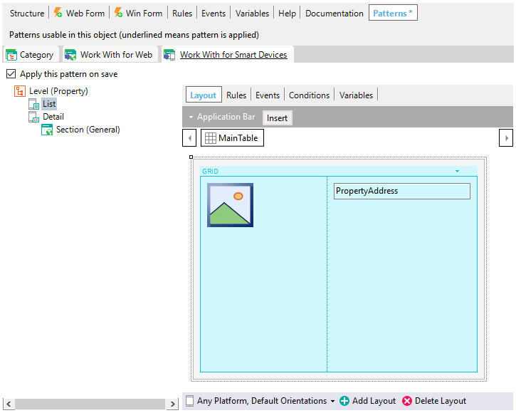
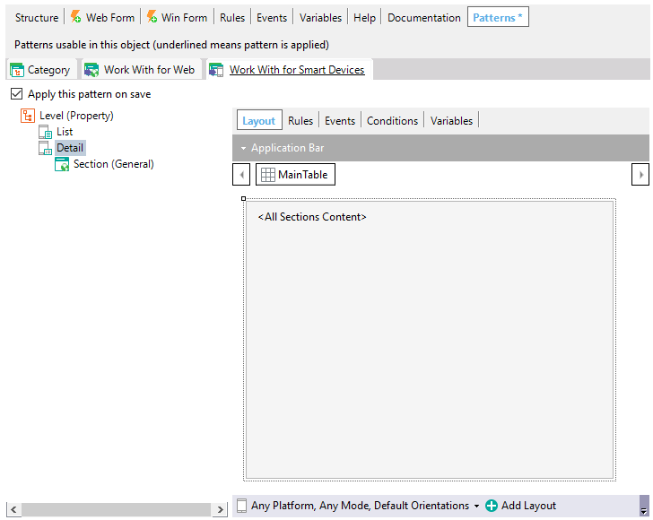
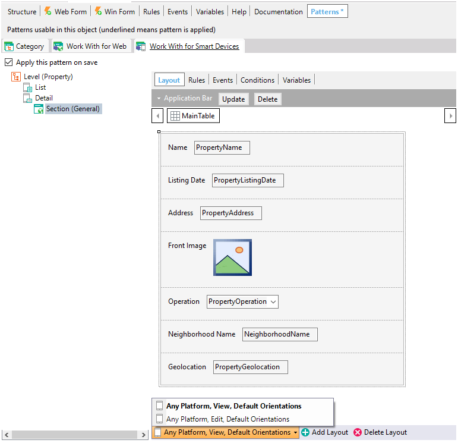

WWSD Pattern instance for Single-level Transactions
Supposing a Property Transaction with the following attributes: When the Work With for Smart Devices pattern is applied, the following instance, associated with the Property Transaction, is generated: The default instance of the Work With for Smart Devices associated with a transaction includes a tree showing the Level (Property) node, and within it:
The List Node allows designing how the item's list will be displayed on the Smart Device screen. By default, this node only includes a Grid control with a subset of Transaction's attributes, which includes an image-based attribute if it has one and the description attribute (marked with icon on the Transaction). Also, this Grid control has Default Action property with <default> value that will open the Detail node for the record tapped by the end-user. The developer can include another kind of content (e.g. TextBlocks, Images, etc.) if it desired.  The Detail Node includes a Section (General), a Section that shows all data relative to the record selected from the List Node.   The Section(General) node includes:
Notes
See also
Videos
|

| Backlinks | |
| Category:Work With for Smart Devices object | WWSD Pattern instance for Multi-level Transactions |
| WWSD Pattern instance for Related Transactions |